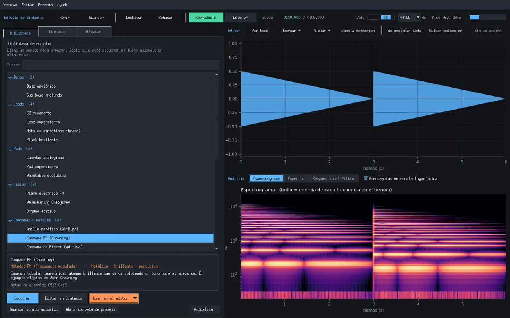
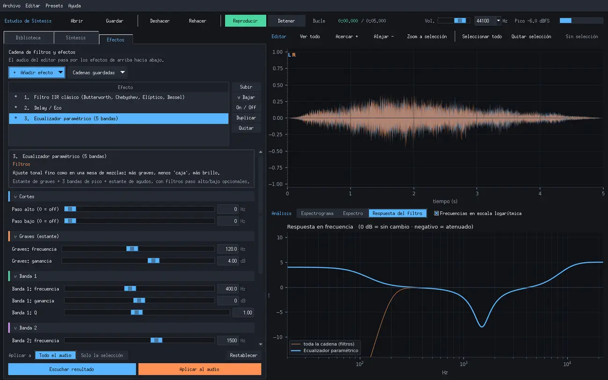

Estudio de Síntesis: un programa para crear y procesar sonidos

Estudio de Síntesis es un programa de escritorio, hecho en Python, para crear sonidos con los métodos de síntesis más conocidos, pasarlos por filtros y efectos, y editarlos como en un editor de audio. Lo pensé como un laboratorio para el curso: se puede escuchar al momento qué hace cada parámetro y ver el resultado en la forma de onda, en el espectrograma y en la curva de cada filtro.
Descarga
Descargar EstudioSintesis.zip (Windows, 91 KB) →
- Descomprime el
.zip(clic derecho → Extraer todo). - Doble clic en
instalar.bat. Crea un entorno de Python aparte e instala numpy, scipy, matplotlib, sounddevice, soundfile y numba. Si el computador no tiene Python, intenta instalarlo conwinget. Esto se hace una sola vez. - Desde entonces, se abre con
ejecutar.bat.
En macOS o Linux funciona igual desde la terminal: pip install -r requirements.txt numba y luego python main.py (con Python 3.10 o superior que incluya tkinter).
Cómo se usa
La ventana tiene tres pestañas a la izquierda y el editor a la derecha.


- Biblioteca: 24 sonidos de partida ordenados por categoría (bajos, leads, pads, teclas, campanas y metales, cuerdas y percusión, voces, texturas) y 8 cadenas de efectos. Cada uno trae una descripción de cómo suena. Con doble clic se escucha.
- Síntesis: se elige el método y se ajustan sus parámetros. Cada método muestra su carácter, para qué sirve y un consejo para probar. Hay un piano para tocarlo con el mouse o con el teclado del computador (
A W S E D F T G Y H U J K, yZ/Xcambian de octava), y una opción de escucha automática que vuelve a tocar el sonido cada vez que se mueve un parámetro. - Efectos: una cadena de filtros y efectos que procesa el audio del editor de arriba hacia abajo. Cada efecto se puede reordenar, apagar o duplicar, escuchar antes de aplicarlo y aplicar al audio entero o solo a la selección.
Con Usar en el editor el sonido pasa a la derecha, donde se puede reemplazar, añadir al final, insertar o mezclar con lo que ya hay. Ahí se selecciona con el mouse, se hace zoom con la rueda, se copia, se corta y se pega, y todo se puede deshacer. Se guarda en WAV, FLAC u OGG.
Métodos de síntesis
| Método | Qué se escucha |
|---|---|
| Osciladores + filtro (sustractiva) | El sonido de los sintetizadores analógicos. De 1 a 8 osciladores (sierra, cuadrada, pulso, triangular, seno, ruido), cada uno con su nivel, paneo, afinación y voces de unísono, que pasan por un filtro resonante o tipo Moog con envolvente y LFO. |
| Aditiva | Sonidos limpios construidos parcial a parcial: órganos, flautas y la campana de Risset. |
| FM | Timbres metálicos y percusivos al estilo Chowning y DX7: campanas, pianos eléctricos, bajos de los 80. |
| AM / anillo | Trémolos y, con moduladora audible, timbres metálicos e inarmónicos. |
| Tabla de ondas | Un timbre que se transforma de forma continua mientras suena. |
| Granular | Nubes y texturas hechas de micro-fragmentos, también a partir de un audio propio. |
| Karplus-Strong | Cuerdas pulsadas y tambores por modelado físico. |
| Distorsión de fase | El sonido del Casio CZ, con formas resonantes. |
| Waveshaping | Una senoide que se enriquece; con polinomios de Chebyshev se eligen los armónicos exactos. |
| Formantes | Vocales cantadas (a, e, i, o, u) y transiciones entre ellas. |
| Ruido | Blanco, rosa, marrón, azul o violeta, con una banda que puede seguir la nota. |
Todos comparten una secuencia de notas escrita como texto (C4 E4 G4, C4:0.5 R:0.25 G4:1, acordes como C4+E4+G4:2, solfeo Do4 o frecuencias en Hz), una envolvente ADSR, vibrato, barrido de tono y unísono estéreo.
Filtros y efectos


- Filtros: IIR clásicos (Butterworth, Chebyshev I y II, elíptico, Bessel), biquad, ecualizador paramétrico de 5 bandas, FIR por ventanas, filtro resonante SVF o Moog modulable por LFO, por la envolvente (auto-wah) o en barrido, filtro peine y filtro de formantes.
- Tiempo y espacio: delay con ping-pong, reverb algorítmica (Freeverb) y reverb por convolución con una respuesta al impulso propia o sintética.
- Modulación: chorus, flanger, phaser, trémolo y auto-paneo, modulador en anillo, vibrato.
- Dinámica y distorsión: compresor y limitador, puerta de ruido, ocho tipos de distorsión, bitcrusher.
- Tono, tiempo y espectro: estiramiento temporal y transposición con vocoder de fase, y procesos espectrales (robotización, susurro, congelado, desenfoque, puerta espectral).
Las configuraciones se guardan como presets en la biblioteca, con su nombre y descripción, y se pueden pasar a otro computador como archivo .json.
Declaración de uso de IA
Claude fue utilizado para los siguientes propósitos:
-
Programar el estudio e instalar sus dependencias.
"Generame un programa de python localmente en el cual pueda realizar distintos tipos de sintesis de sonido, aplicandole distintos tipos de filtros a los sonidos creados o cargados (utiliza los metodos mas conocidos y populares de sintesis y lo mismo los filtros). Altamente customizable como software de edicion de sonido. Instala todas las dependencias necesarias"
-
Mejorar la interfaz, describir los sonidos y agregar el banco de osciladores.
"Esta perfecto, pero date tu tiempo en hacer que la interfaz sea mas amigable (tanto funcional como visualmente), tambien añadiendo una breve descripcion de que puedo esperar de cada sonido, a su vez me gustaria poder tener la capacidad de añadir o eliminar mas osciladores en el area de sintesis"
-
Publicar este post y dejar el programa descargable desde mi carpeta del portafolio.
"Crea un post en mi pagina con la explicación que escribi en este documento de word, sobre el programa estudio sintesis y vinculalo con una carpeta en mi portafolio de la orquesta de laptops, para poder descargarlo directamente"